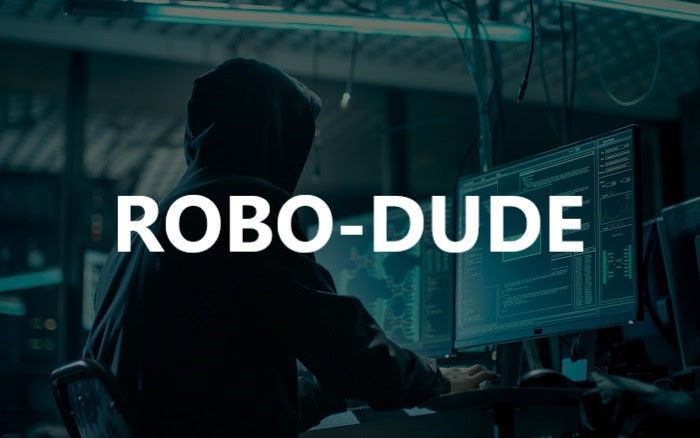

About this Robo Dude Blog
Welcome to your personal Robo Dude Blog, where you can share your exciting journey of research and projects in the realm of Robotics Operating System (ROS)! This platform is all about documenting your experiences, insights, and discoveries as you delve into the fascinating world of robotics. Here's what your blog will offer:
1. ROS Project Updates:
Keep your readers informed about your ongoing projects. Share the progress, challenges
faced, and the innovative solutions you come up with while working on various robotics
projects using ROS.
2. Research Breakthroughs:
As you conduct research in the field of robotics, provide detailed explanations of your
findings and discoveries. Make it easy for others to follow your work and learn from your
experiences.
3. ROS Tutorials:
Share step-by-step tutorials on how to use ROS effectively. From setting up the environment
to coding and implementing various ROS functionalities, help aspiring roboticists and
developers learn the ropes.
4. Code Walkthroughs:
Offer code snippets and in-depth explanations of your ROS implementations. Readers will
appreciate learning from your code and understanding how you approach different challenges.
5. Lessons Learned:
Robotics projects often come with valuable lessons. Share your insights into what worked
well and what didn't in your experiments. These reflections can be incredibly beneficial for
others starting their journey with ROS.
6. Showcase Your Robots:
Feature the robots you've built or programmed using ROS. Highlight their capabilities,
functionalities, and potential applications. Including multimedia content like images and
videos will make the blog even more engaging.
7. ROS Community Engagement:
Interact with the ROS community through your blog. Encourage discussions, seek feedback, and
collaborate with fellow ROS enthusiasts. Engaging with like-minded individuals can lead to
new opportunities and ideas.
8. Challenges and Problem-solving:
Discuss the challenges you encounter while working on ROS projects and how you overcome
them. Problem-solving is an essential aspect of robotics, and sharing your solutions can
help others facing similar issues.
9. Updates on ROS Advancements:
Stay up-to-date with the latest developments in ROS and related technologies. Write about
new releases, updates, and significant improvements that can enhance robotics development.
10.Personal Reflections:
Don't hesitate to include personal anecdotes and reflections about your robotics journey.
Share your motivations, inspirations, and the impact that working on ROS projects has had on
you.
Your Robo Dude Blog is your platform to inspire, educate, and connect with the broader ROS
community. It's a space where you can showcase your passion for robotics and contribute to
the advancement of this exciting field. Happy blogging and sharing your knowledge with the
world!

Sourabh Tiwari
Founder
"From Ideas to Reality: Empowering the World through Robotics and AI 🌐🤖"